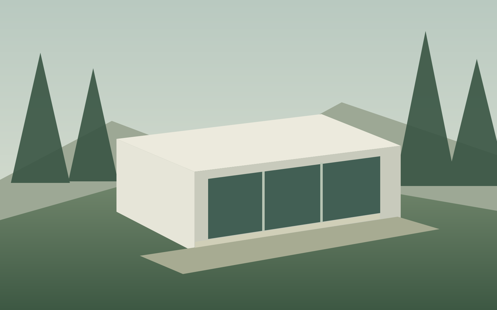

01 / Landscape study
A sheltered threshold
Replace with a real project and licensed imagery.

Architecture, considered
A place to arrive.
A different way to live.
Static starter · Add your footage
A considered way of living
We work from the qualities of a place: its light, landscape and daily rhythms. This is sample studio copy for a reusable layout. Replace it with a real story and the services you provide.
Selected studies
Replace with a real project and licensed imagery.
Make the work specific to the people behind it.
From the first idea
Begin with a conversation about place, people and priorities.
Explore spatial possibilities before committing to detail.
Build something that works for the life it needs to support.
A place to begin
Starter template: add your real enquiry link or connected form here.
Return to the beginning ↑